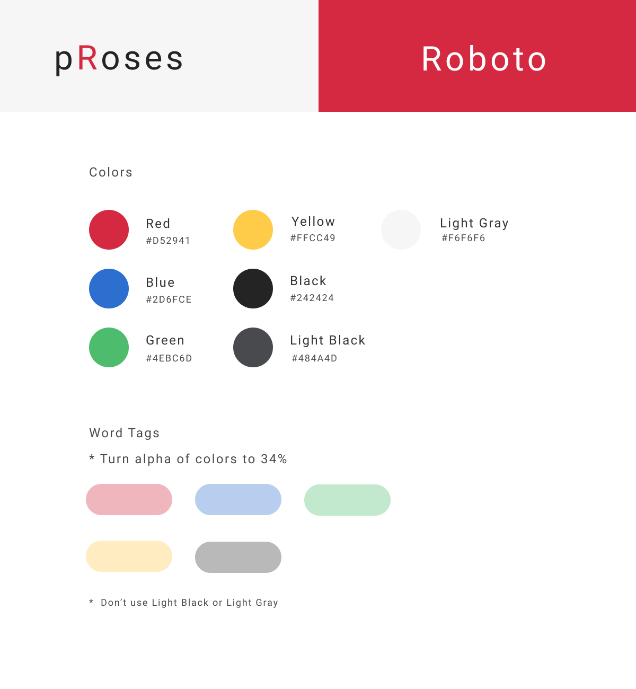

Style Guide
Dashboard
Manuscript
Session View

Proses is a project I began working on independently in late August with the hopes of making creative writing a visual experience. I want writers to be able to engage with their stories on a deeper level than what other tools allow.
At best, writing tools help users organize their chapters and scenes. They don't help users visualize their stories or enhance productivity and creativity. They expect users to organize their characters and plot threads into plain text files or flashcards.
But what if there was a tool to help writers visually engage with their stories from rough outline to final draft?
Proses will help writers keep track of their outlines and progress by visualizing these two core elements:
It will also equip writers with different tools for editing and productivity.
Analysis Mode - Highlights adverbs, cliches, and tells.
Senses Mode - Highlights senses.
Flow View - Turns the screen black and disables the use of backspace in hopes the writer can enter the Flow State.
Rhythm View - Turns every sentence into a vertical column on a bar graph. Helps writers see the waves of their writing and how varied their sentences are.
Potential Additional Features:
I have gained access to OpenAI's beta program. Before a public launch, OpenAI must grant approval. Because of this, it can't be guaranteed whether or not these features will make it. Ideally, with the help of OpenAI, Proses will allow users to do the following: